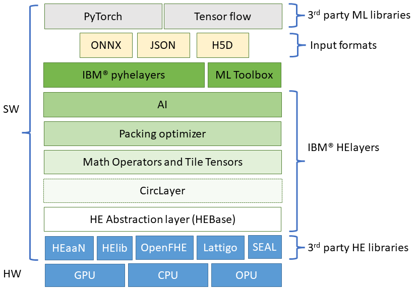
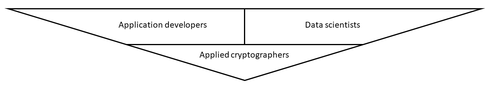

HElayers Overview#
FHE overview
If you are unfamiliar with FHE, it is recommended to first visit the FHE overview page.
HElayers is an SDK that enables data scientists and application developers to easily use the power of FHE for developing and deploying FHE into their applications. HElayers is enabled with patented optimization and performance-boosting innovation for computation, AI innovation, and use case requirements that facilitate the practical use of a wide variety of AI workloads over FHE data.
Use HElayers when you want to
have a smooth transition from a non-encrypted environment to a privacy preserving one,
benefit from specially crafted optimizations that would otherwise require cryptographic and specific library knowledge to run efficiently, and
enable HE-based computations without dependence on a specific HE library
Layered design#
HElayers is designed with a layered set of capabilities, where every layer is coupled with appropriate C++ or Python APIs. It uses low-level HE cryptographic libraries such as HEaaN, HElib, SEAL, OpenFHE, and Lattigo and adds functionality on top of them in a layered structure. These layers aim to provide the most for the various user types HElayers has. A concrete description of the layers is provided per user type below.
HElayers audiences#
HElayers target different types of users with varying expertise levels. Each user group is provided with specific sets of APIs tailored to meet their individual needs. All layers encompass research and debugging tools that enable algorithm testing in mockup settings, providing detailed trace data, facilitating approach comparisons, and more.

HElayers provides application developers with an intuitive solution to leverage the power of FHE technology in their projects. With its high-level APIs, developers can tackle AI and other challenges without the need for deep expertise in FHE. For instance, if you are accustomed to working with neural networks using popular libraries like Keras, HElayers equips you with the essential tools to seamlessly import and convert your work to HE, expanding the possibilities of secure computation.
Application developers should use the AI layer APIs in C++ or Python. In addition, it is recommended to checkout the various use cases based tutorials that include applications for Credit card fraud detection, Heart disease detection, and COVID-19 predictions using encrypted CT scans.
Other application level tutorials include the ML tutorials the DB tutorials and the other tutorials.
There are two types of data scientists: users and explorers.
Users primarily focus on utilizing existing, ready-to-use applications, such as HE-friendly neural networks, to evaluate how HE can be integrated into their workflows. These users can begin by familiarizing themselves with HElayers’ ML tutorials, enabling them to apply the demonstrated practices to their own data. They can leverage pre-designed and tested models, such as AlexNet and ResNet, and can test HElayers by providing it with an ONNX file representing their desired NN. This allows them to quickly observe the results of their HE applications.
Additionally, HElayers offers the MLToolbox, which aids users in converting any NN to be HE-friendly, further enhancing their capabilities in utilizing HE.
On the other hand, researchers delve into developing novel HE-friendly training techniques. While researchers can also take advantage of the MLToolbox, their primary focus revolves around testing and refining new designs using HElayers’ functionalities.
Applied cryptographers, who prefer direct engagement with HE primitives, are advised to embark on their journey by exploring the comprehensive tutorials on tile tensors. These tutorials serve as an invaluable resource for acquiring the necessary knowledge and skills in this domain.
Afterwards, they can delve into exploring the tile tensor APIs, leveraging the supported mathematical operations within the Math layer, and expanding their understanding of the foundational layer of HElayers, HEbase. To gain further insight into lower-level capabilities low-level API tutorials and HE utiltiies tutorials offer demonstrations and guidance.
For expert users seeking advanced control, HElayers offers an HElayers packing optimizer for enhanced performance as well as tutorials on leveraging CircLayer Additional resources are available in the form of C++ only tutorials catering to users interested in maximizing their expertise in HElayers.
Developers FAQ#
Does HElayers requrie a specific hardware?
HElayers can leverage different hardware capabilities such as CPUs an GPUs, this depends on underlying library of choice. Check the installation page to learn more about HW support.
Does HElayers depend on a specific ML library such as Pytorch or TensorFlow?
No, HElayers receives inputs from ML packages such as Pytorch or TensorFlow (see also tensorflow-onnx) by using common file formats such as ONNX. Users who work with ML packages that support ONNX can automatically enjoy HElayer’s capabilities.
Currently, ONNX is only partially supported by HElayers, see the ONNX manual page for more info.
Is there any special background I should have to successfully use HElayers?
HElayers offers high-level APIs that enable users to solve AI and other problems without requiring in-depth knowledge of Fully Homomorphic Encryption (FHE). For instance, if you are accustomed to working with neural networks using popular libraries like Keras, HElayers equips you with the necessary tools to import and convert your work into the HE domain.
However, it is still beneficial to have a basic understanding of the specific domain of the HE application. For instance, to achieve optimal performance in a neural network inference application, having knowledge of the pros and cons of different neural network architectures is recommended.
Moreover, if you intend to utilize the mid-to-lower level APIs, it is advisable to possess some level of data science capabilities or familiarity with the underlying HE schemes and their properties. This understanding will enable you to make more informed decisions and leverage the full potential of HElayers.
Does writing an HE-based application require any code or application changes?
Generally, yes FHE requires code changes. Some things that are easy to do with plaintext, or unencrypted data, are difficult to do with HE schemes. For example, a common function like MAX (taking the maximum of two numbers) is easy to compute using plaintext, but very difficult to compute using encrypted data.
Algorithms need to be changed to make them ‘HE friendly’ so that they are able to be decomposed into three foundational FHE primitives of multiplication, addition and rotation.
For complex operations, if there is no direct implementation feasible due to performance requirements, one must substitute the desired function by polynomial approximation. Over time, the API (Application Programming Interface) library will provide more functions that have been implemented using the three FHE primitives. Our goal is to make the developer experience as comfortable and familiar as possible, while minimizing the number of changes that is needed to implement FHE.
Do you need to approximate computations with polynomials to make it compatible with FHE?
That’s depends on your application. Most FHE schemes only provide two basic operators: addition and multiplication. This means that everything you compute will have to be a polynomial or approximated using polynomials. The larger the polynomial, the better the approximation. However, having larger polynomials means it will be more difficult to compute. For example, if you have a function involving a square root, division, and MAX operators, it may be very easy to do using plaintext. But for FHE, it will result in a complicated polynomial and will be much slower to compute. This again touches why in principle everything is possible to compute under HE, but in practice, it’s not always practical. To learn more about the built-in math functions that HElayers already implements see the Math layer APIs.
Any special challenges with testing and debugging FHE programs?
There are three main challenges with testing and debugging FHE programs. The first is that because encrypted computations require more resources than unencrypted computations, computations are slower. The second is the additional layer of complexity that is created due to the constraints of working with ciphertext of a fixed size. The last challenge is the error (noise) that needs to be managed that is inherent to FHE operations.
In HElayers, we provide tools to help address these challenges. For example, we offer APIs to measure noise and compare the computation in plaintext with a computation done under encryption (see Debug Contexts). This allows you to track how the noise grows and manage the noise.
What can I program with FHE? What can’t I program with FHE?
In principle, the ‘Fully’ in FHE means that you can compute on any function that you want. However, in practice, some computations are very difficult to the point of being impractical.
FHE computation is most similar to a hardware circuit; we get the data, we run it through a sequence of gates and each gate performs an operation. Because the data remains encrypted and we are not able to see it in the clear, it is difficult to perform branching with FHE (e.g. if the data meets a certain condition, do X, else do Y). As a result, the data must run through all of the gates.
What programming constructs are not available on FHE in terms of control flow?
There is no control flow for FHE - the input arrives and it runs through a circuit involving gates. You can’t branch at all no ifs, no loops. It’s like one big circuit.
What is the performance and speed of FHE now?
Performance is dependent on the use case and the corresponding implementation. For many applications, FHE is fast enough now to be used. This is especially the case when FHE enables workloads that could not have been computed in an automated fashion before due to privacy or data sharing concerns.
Are there any special CPUs that are needed?
There are no special CPUs or hardware that is strictly needed to perform FHE operations. However, FHE is computationally intensive and utilizing faster processors with larger cache sizes and memory capacity will result in better performance.